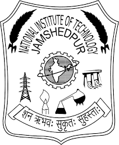

|  | NATIONAL INSTITUTE OF TECHNOLOGY |
The Department of Metallurgical and Materials Engineering was amongst the four branches with which the institute was initially launched in 1960, with increasing focus on : Materials Technology Foundry Technology Iron & Steel Nanotechnology Mineral Benefaction and the R&D work being carried out in these fields in the metallurgical sector, Materials Engineering was included in the curriculum of the department in 1995. There are M.Tech course on Materials Technology & Foundry Technology.